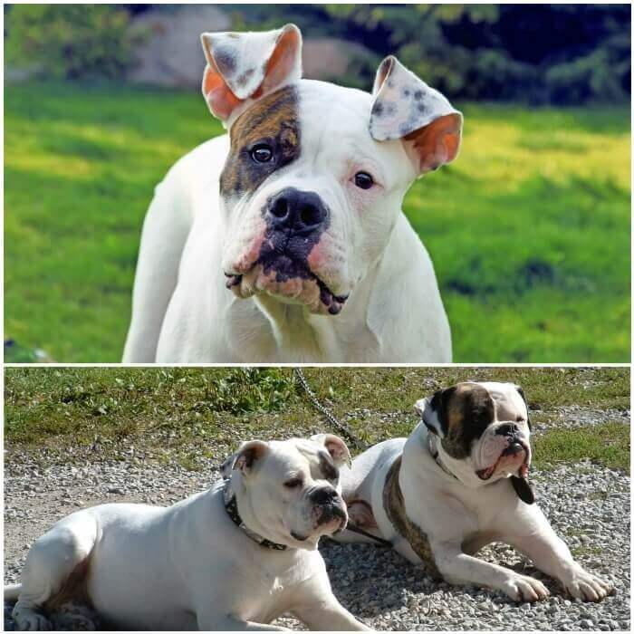
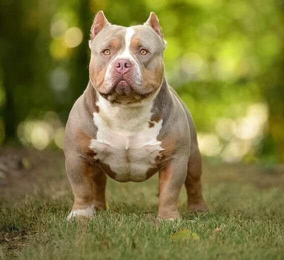

Muchas personas tienden a ver al pitbull como una de las razas de perros más peligrosas . Sin embargo, esta creencia no es más que una visión errónea, puesto que un perro será peligroso o no en función de la educación y la atención que le preste su dueño. Además de esto, también hay quienes desconocen los tipos de razas de perros pitbull y piensan que se trata solo de un perro con las mismas características.
La historia del pitbull no debe pasarse por alto. Este perro fue el resultado de distintos cruces que se hiceron entre terriers y bulldogs, en el intento de combinar en un perro las características que poseía cada raza: la anatomía y fuerza del bulldog, el carácter del terrier, etc.
Pitbull Blue
Pitbull Blue .
El PITBULL BLUE es una variedad concreta que gusta por su manto y color de ojos concretos.
Si sientes curiosidad por esta raza y quieres saber más sobre ella, aquí tienes todos los detalles que necesitas.
El pitbull blue es una variedad del american pitbull terrier que tiene la particularidad de poseer un manto grisáceo azulado, de ahí su nombre (blue significa “azul” en inglés). Los ojos también tienen una coloración concreta, que va del tono avellana al azul.
El origen de la palabra pitbull es triste. Pit, que significa “foso” en inglés, está presente en la denominación debido a que, tras la prohibición de las peleas de perros (bull fighting) en Inglaterra en 1835, se metía a estos canes en fosos para que mataran ratas a contrarreloj.
Antes de esta práctica, bull terrier era el nombre con el que se conocía a estos canes. Esta denominación responde a otra práctica cruel , en la que se soltaba a estos perros para que pelearan contra toros. De esto y las carreras por matar ratas salió la palabra pitbull.
La variedad pitbull blue procede del cruce de esta raza con el blue paul terrier.
Pitbull Terrier Americano
Pitbull Terrier Americano .
El AMERICAN PITBULL TERRIER es el Pitbull por excelencia. Se cree que el resto de razas Pitbull fueron creadas a partir de él. Procede del cruce entre un Bulldog Inglés y un American Terrier.
Los American Pitbull Terrier son perros amistosos y equilibrados, muy inteligentes y trabajadores. Se llevan muy bien con los niños.
Contrariamente a lo que su fama podría indicar, no se trata de buenos perros guardianes, porque suelen ser cariñosos con todo el mundo. Sin embargo, defenderán a su familia hasta la muerte si es necesario.
Necesitan un entrenamiento riguroso y mucha disciplina, e incluso es importante socializarlos durante su etapa de cachorros para limitar su tendencia a la dominancia y su terquedad.
El American Pitbull Terrier es más alto que otros Pitbull. Su peso oscila entre los 13 y los 25 kilos.
Pitbull Bull Terrier

Pitbull Bull Terrier.
El PITBULL BULL TERRIER es un perro testarudo pero amable, que necesita el afecto y compañía de su familia. Es muy valiente y tiene una gran vitalidad. Por ello, se trata de un perro ideal para familias activas.
Al igual que otros Pitbull, es un perro que disputa la dominancia y puede acabar estableciendo sus propias reglas.
Por lo demás, se trata de un perro muy divertido y leal, que requiere estimulación mental y ejercicio físico , y siempre estará dispuesto a salir en busca de aventuras.
Se lleva bien con los niños , pero es importante , que enseñes a los niños a interactuar con ellos y que supervises los juegos, sobre todo si tus hijos son muy pequeños. Son excelentes compañeros de juego para niños mayores activos, ya que tienen una energía ilimitada.
Pitbull Bully Americano

Pitbull American Bully .
El PITBULL AMERICAN BULLY tiene un aspecto físico rudo e imponente. Es uno de los tipos de pitbull más bajos, aunque su cabeza y cuerpo son grandes teniendo en cuenta su altura. Esta raza no está reconocida en todas las organizaciones internaciones, ya que algunas de consideran a este perro como u híbrido o mestizo.
También incluido en este grupo, no cabe duda de que el “bully” es un perro muy peculiar. Es el resultado del cruce entre el pitbull terrier americano, el Staffordshire terrier y los bulldogs ingleses. Puede medir entre 16 y 20 pulgadas, alcanzando un peso proporcional a su altura.
El bully americano posee un gran instinto de lucha y un fuerte impulso por el trabajo duro, ambos rasgos heredados de sus padres, pero eso no le impide ser una excelente mascota para la familia.
Las características físicas del American Bully están muy abiertas, principalmente porque es una raza que cuenta con cuatro variedades: Standart, Classic, Pocket y XL . Todas estas tipologías tienen en común varios rasgos: una potente musculatura, una enorme cabeza en forma de cubo, una mandíbula fuerte, un cuerpo compacto y una cola no muy gruesa de tamaño medio.
El pelaje de todas estas razas es corto y está sostenido en una piel flexible, gruesa y dura.